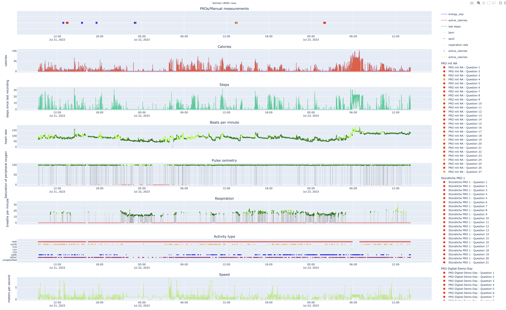
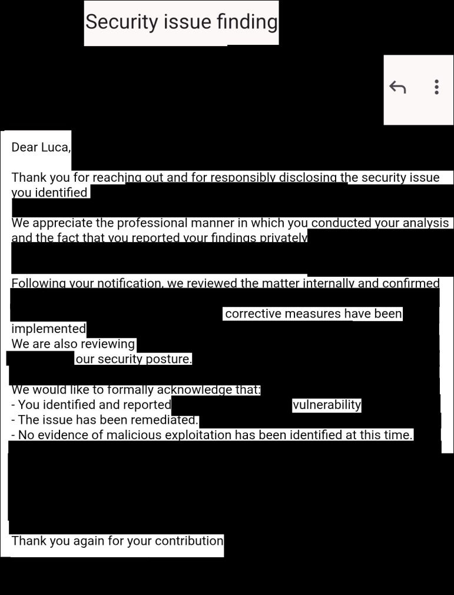

English · Deutsch
Hallo, ich bin M.Sc. B.Sc. B.Sc. Luca Leon Happel, Mathematiker, Informatiker und Sicherheitsforscher aus Düsseldorf. Mein Team und ich entwickeln, auditieren und hacken Hochsicherheitssysteme und regulierte Branchen, in denen Fehler teuer sind. Wir machen: Data Science, KI, Hochsicherheits-Audits, Reverse Engineering und App-Entwicklung. Wir arbeiten deutschland- und europaweit remote und vor Ort.
Publiziert im European Heart Journal – Digital Health
2× 1. Platz HHU-Ideenwettbewerb · Festival-Award
Kritische Schwachstelle gefunden und verantwortungsvoll gemeldet
MDR-konforme Medizinsoftware seit 2022
Für wen ich arbeite
Kliniken & Universitätskliniken
Klinische KI und Data Science auf Patientendaten, DSGVO-konforme On-Premises-LLMs und RAG, Sicherheitsprüfungen klinischer IT.
Medizinproduktehersteller
MDR-konforme Medizinsoftware, Cybersecurity-Audits und Reverse Engineering von Geräte-Firmware, Apps und Protokollen.
Kritische Infrastruktur & Industrie
Penetrationstests und Schwachstellenforschung für KRITIS-Betreiber und Industriesoftware (NIS2, IEC 62443), mit verantwortungsvoller Meldung.
Referenzen

Begutachtete Publikation · August 2025
monti – KI-Patientenmonitoring
KI-gestütztes klinisches Monitoring mit modernem ML auf hochsensiblen Patientendaten
Am Universitätsklinikum Düsseldorf entwickelte KI-Monitoring-Plattform, die mit modernen KI-Methoden auf hochsensiblen klinischen Patientendaten Komplikationen bei Herz- und Onkologiepatienten erkennt.
10.1093/ehjdh/ztaf004
Beispieldaten
European Heart Journal – Digital Health

Responsible Disclosure · März 2026
Schwerwiegende Sicherheitslücke behoben
Software für kritische Infrastruktur
Unabhängiges Sicherheitsaudit einer geschäftskritischen Software-Suite, die in streng regulierten Umgebungen mit höchsten Sicherheitsanforderungen eingesetzt wird. Dabei wurde eine schwerwiegende Schwachstelle identifiziert, die unter bestimmten Bedingungen ein Risiko für die physische Sicherheit, die öffentliche Sicherheit und hohe finanzielle Verluste darstellte. Der Fund wurde verantwortungsvoll gemeldet und vom Hersteller formell bestätigt. Korrekturmaßnahmen wurden umgesetzt, um das Ökosystem abzusichern.